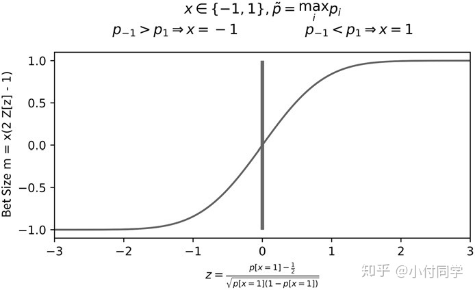
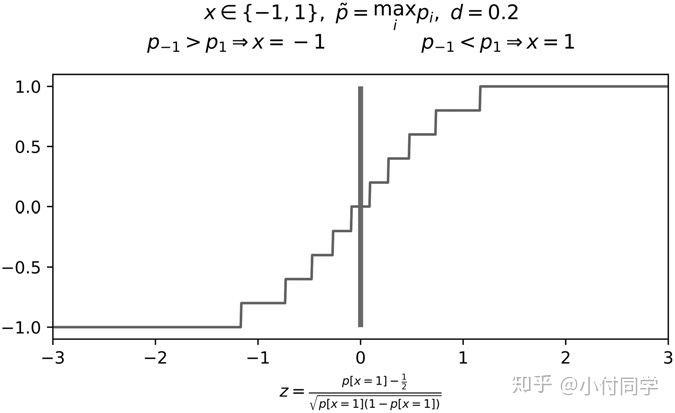
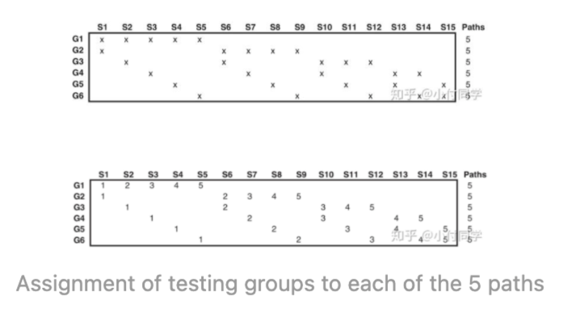

chapter 10 押注大小
即使股价预测很准，但是头寸配置的不恰当，还是有可能亏钱。
- 假定三期股价为 [1, 0.5, 1.25]，仓位1: [0.5, 1, 0] & 仓位2: [1, 0.5, 0]，则前者挣钱而后者亏钱。
- 我们偏好这样的下注策略：建仓时保留一些现金，如果交易信号加强（股价变为0.5），就追加投资。
- 交易信号越强，下注可以越大，因为交易信号很难变得更强了。所以预测的概率 与下注之间可以构建一种函数关系. 
- 如果每次预测时，如果交易信号的微小改变就要调仓，那换手率就太高了，作者建议可以对预测结果做滑动平均，或者将下注量离散化（如下图） 
- 当股票的市场价格\(p_t\)和预测价格\(f_t\)波动时，可用如下方法动态地确定下注量\(\hat{q}_{i, t}\)： \[\hat{q}_{i, t}=\operatorname{int}\left[\frac{x}{\sqrt{w+x^{2}}} \cdot Q\right]\], \(x=f_{i}-p_{t}\)为预测价与当前价的差价， Q为最大持仓量。 > label就是交易信号，表示买或者卖, 两个label 如果是基于相同时间段的收益率 计算出来的，就说是concurrent的.
- 基于预测概率确定BET SIZING
- 平均主动BETS
- 动态BET SIZES 和 限定价格
chapter 11 回测有风险
回测是量化中最重要但也最容易被误用的工具，本章将介绍回测时容易犯的错误。
- 一个物理实验室可以通过控制变量来探究精确的因果关系，而回测不是实验，它并不能证明一个策略好，只能证明一个策略不好。
- 要做好回测极其困难，我们至少会面临这些问题:
- 幸存者偏差：只用现存的股票构建投资组合回测，殊不知过去多少公司倒闭退市了；
- Look-ahead bias：回测时用到的数据在那一刻还没发布；
- 事后诸葛亮（各种事后分析都在编故事）；
- 手续费：要模拟手续费很难，唯一准确的方式是上实盘；
- 空头：实际交易中如何找借方、空头的成本、空头的额度都需要考虑；
- 即使避免了以上问题，你的回测也可能是错的——在一个数据集上回测了成百上千次才得到的漂亮结果，大概率是假的。如第八章所述，特征重要性分析帮助我们理解 ML 发现的结果，它在回测之前进行，是一种“事前“归因。相反，回测并不能帮我们理解为什么一个策略会盈利。通过回测发现的有效“因子”如同上一期彩票的中奖号码，对下一轮抽奖无益。回测前做好数据结构化、标签、加权比回测本身更重要。
- 重复回测带来的过拟合可以认为是一种选择偏差，要避免这种偏差可能是量化中最根本的问题。
- 以下步骤可以帮我们减少这种偏差:
- 在多种金融资产上回测：由于金融资产的多样性，如果你发现错误 只存在于债券，那该策略很可能是错的；
- 用 bagging 减少过拟合；在完成本书章节1-10 的研究之前别回测；
- 记录得到当前结果之前回测了多少次，从而推算出过拟合的可能性；
- 假如回测结果没能得到有效的策略，从头开始。千万不要在回测结果的基础上继续研究。 > Backtesting while researching is like drinking and driving. > Do not research under the influence of a backtest.
- 如果用标准CV回测来选择策略，一些回测路径会重复出现，导致极易过拟合。所以一些随机性非常有必要，例如基于probability of backtest overfitting (PBO) 的回测。
chapter 12 使用交叉验证做回测
本章将介绍三种回测方法，希望能得到更准确的回测结果。
- 回测用历史数据来检验策略的样本外表现，这些历史数据有两种用法：狭义上，模拟策略的历史表现（walk-forward / WF）；广义上，模拟策略在特定市场环境（历史上不一定发生过）中的表现。前一种方式更广为人知，但两种方式各有利弊，都应掌握。WF 模拟策略在历史市场行情中的表现，如十一章所述，要正确地进行 WF 回测极为困难，没用通用方法。
- WF的优点：
- WF 有清晰的历史意义，与模拟盘的结果一致；
- WF 的测试集在训练集之后，只要正确 purging 后就不存在信息泄露（见第七章）。
- WF的缺点： 只有一种情形得到测试（即沿历史路径回测），所以容易过拟合；WF 不足以代表未来的表现，因为回测结果可能受到特定数据的影响而产生偏差；WF 回测时数据利用率不高（“most of the information is used by only a small portion of the decisions”）
- 得到一个新策略时，投资者往往想知道这个策略在“非常时期”，如08年金融危机、15年股灾中表现如何。可以将我们希望测试的时期划为测试集，其他时期划为训练集，例如将 2008年作为测试集，2009至今作为训练集。训练集在测试集之后的划分从历史角度来看并不准确（not historically accurate），但通过 CV（cross-validation）回测的目的就是检验策略在不同市场行情（scenarios）下的表现，从而推断策略在未来的表现。
For each period of the backtest, we simulate the performance of a classifier that knew everything except for that period.
- CV的优点：1. 能检验不同市场行情；2. 每个决定用到的信息量相同；3. 能实现最长的样本外回测。（后两点不是特别理解 ）
- CV的缺点：1. 和 WF 一样，只有一条回测路径（尽管不是历史路径）；2. 没有明确的历史意义；3. 由于测试集可能位于训练集之前，容易发生信息泄露。
- combinatorial purged cross-validation (CPCV)克服了WF和CV的缺点。假定将全数据集分为 N 份，其中 k 份作为测试集，其余作为训练集，则共有\(C_N^k\)种划分方案。所有回测路径数 （如下图所示） 
- Assignment of testing groups to each of the 5 paths按照划分依次在训练集上训练、测试集上测试，最后可以计算\(\varphi[N, k]\)条路径分别的技术指标（如夏普率），从而更全面地考察模型表现。相比 WF、CV，CPCV 得到的结果（如夏普率）方差小，从而能减少过拟合和错误回测的可能。
chapter 13 在合成数据上做回测
本章将探究如何合成数据并进行回测。
- 使用历史数据生成一个合成数据：先从从真实数据估计得到的分布，然后从分布中采样得到合成数据。
- 使用合成数据去做回测的好处是，可以测试很多次，在unseen的情况下，因此可以减少得到一个过拟合策略的概率。
- 利用合成数据回测能减少过拟合，但合成金融数据是一个很大的课题，我们先考察一下交易规则（trading rules）。交易策略假定市场不是有效的，它们用基本面 / 技术面分析试图找到套利机会。交易策略千变万化，但交易规则大同小异：比如策略的信号强于阈值则买入，达到盈利或止损点则卖出，这里的阈值、盈利止损点就是交易规则。如果用合成数据回测来确定交易规则，则过拟合的风险将大大减小。
- 用离散OU过程（discrete O-U process）对资产价格建模，给定资产i当前价格和未来预测价格，其在 t 次交易后的盈亏\(\pi_{i,t}\)服从正态分布。可以此为依据模拟价格走势进行实验，得到最佳交易规则，而无需用真实历史数据回测。
- 作者在原文中给出了详细步骤以及图文分析，这里试举一例：下图是采取不同盈利、止损点进行模拟数据回测得到的夏普率热力图。对于中性市场（上图），最好的策略是设定较宽的止损空间和较窄的盈利点；对于走高市场（下图），最好的策略是采取较宽的盈利点，而止损点的设定可以比较宽泛。
- 总而言之，通过探究引导价格波动的随机过程，而不是在真实历史数据上回测，我们得到的最佳交易规则不会在特定数据上过拟合。尽管这样得到的交易规则可能不是最优的，但也远好于过拟合的结果。本章仅以 OU 过程为例，也可以尝试其它建模方式。
chapter 14 回测统计
- 回测的三种范式：
- 历史模拟，向前游走
- 情景模拟：交叉验证
- 在模拟数据上做simulation
- 回测统计量（Backtest statistics）应该帮助揭露策略的弊端（如可能的风险）、帮助投资者比较不同策略。
- 一般统计量（general characteristics）能告诉我们回测的大致特性：时间范围（回测起讫时间）、资产规模（Average AUM） ，策略的资金容量（Capacity）、杠杆率（Leverage）、平均持仓时间（Average holding period）、换手率（Annualized turnover），Maximum dollar position size/Ratio of longs/Frequency of bets
- 衡量策略表现（performance）的统计量包括：盈亏（PnL, Profit and Loss）、多头盈亏（PnL from long positions）、年化回报率（Annualized rate of return）、命中率（hit ratio）、命中回报率（Average return from hits）、失误回报率（Average return from misses）……
- 策略的回报率往往在一段时间内连续为正 / 负，称之为“周期”（Runs）。周期的存在增加了策略回撤的风险，所以需要一些统计量来衡量，包括：Returns Concentration（衡量回报的集中程度）、drawdown（回撤）、time under water。
- 某些策略错误地估计交易费用导致失败，这些需要考虑的统计量包括：Broker fees per turnover、Average slippage per turnover……
- 一些考虑到风险的统计量包括：夏普比率（Sharpe Ratio/ SR）、PSR（Probabilistic SR）、DSR（Deflated SR）、信息率（Information ratio）…… > 夏普值，衡量的是一项投资在对其调整风险后，相对于无风险资产的表现。它的定义是投资收益与无风险收益之差的期望值，再除以投资标准差（即其波动性）。它代表投资者额外承受的每一单位风险所获得的额外收益。
Every backtest result must be reported in conjunction with all the trials involved in its production. Absent that information, it is impossible to assess the backtest’s “false discovery“ probability. —— MARCOS’ THIRD LAW OF BACKTESTING
- 基金经理往往希望对模型的收益进行归因（performance attribution），可以参考多因子模型（Barra’s multi-factor method）。
chapter 15 了解策略风险
本章的目的是帮助你检验策略风险。
- 几乎所有策略都有盈利点和止损点，所以我们可以对策略的收益建模，检验策略对一些参数的敏感程度。
- 假定一个策略每年进行 n次 IID 决策，每一次有p的概率盈利\(\pi\)，1-p的概率盈利\(-\pi\)，则该策略的年化夏普比率 。（盈亏额不对称的情形可做类似讨论）
- 如果交易频率不高（ 不大），则需要较大的 才能达到高夏普比率。但即使 略大于 0.5，只要 足够大，夏普比率也可以很大，这是高频交易的思路。另一方面， 很大时， 的小幅波动会带来 的较大改变，很可能 降低 1% 就会抹去所有盈利——我们称之为策略风险（Strategy risk）。
- 策略风险不同于资产组合风险（portfolio risk）：假定 为依照上面公式计算得到的盈亏平衡点，策略风险指 ；而资产组合风险是市场中存在的风险，由首席风险官监控。策略风险过大时，即使投资标的的风险不大，这个策略也有较大概率无法超过业绩标准。所以策略研发者需要想办法减小 ，比如调节 。
chapter 16 基于机器学习资产配置
本章提出了基于图模型的层次风险平价方法（Hierarchical Risk Parity / HRP），其在统计性能上优于传统的资产组合优化方法。
资产组合可谓金融中最历久弥新的问题了。60多年前，马科维茨提出了Critical Line Algorithm（CLA）用于不等式约束下的二次规划问题，尤其是资产组合优化问题。CLA 的缺点是鲁棒性不高，因为二次规划需要对资产间协方差矩阵取逆，当该矩阵条件数很大时会带来较大误差。
资产组合中相关资产（多重共线性）越多，资产间协方差矩阵的条件数越大，结果越不稳定，这便是 Markowitz’s curse。此外资产越多，用于估计协方差矩阵的数据也越多，这些历史久远的数据也会造成误差。
作者认为，二次规划试图构建全连接图（fully connected graph），其中每个节点可能替代其他节点。当有50支资产时，一个全连接图有1225条边，这种复杂结构造成二次规划结果的不稳定。很自然地，我们会希望减少不必要的边.
当我们决定投资摩根大通时，下一步我们更可能考虑增/减持高盛的股票而不是一家地产公司的股票，因为摩根和高盛同属金融企业。依照这种思路，我们可以利用 ML 中的聚类算法，根据资产的特性 / 资产间相关性将所有资产建构成树状图，如下图所示。这被称为层次风险平价方法（HRP）
实验中 HRP 构建的投资组合比 CLA 更分散，风险也更低，同时 HRP 的样本外夏普比率更高。考虑到 HRP 不需要计算逆矩阵，其适应性和鲁棒性也更强。
HRP 不仅可以用于在不同资产上配置资金，还可用于在不同策略上配置资金。
参考
- 《Advances in Financial Machine Learning》
- https://blog.csdn.net/weixin_38753422/article/details/100179559
- https://zhuanlan.zhihu.com/p/29208399